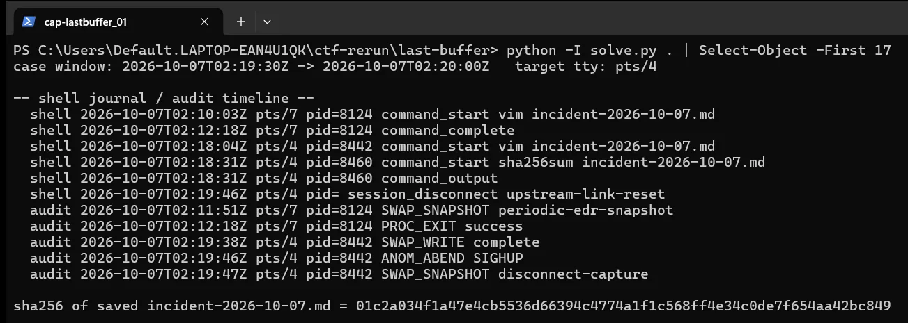
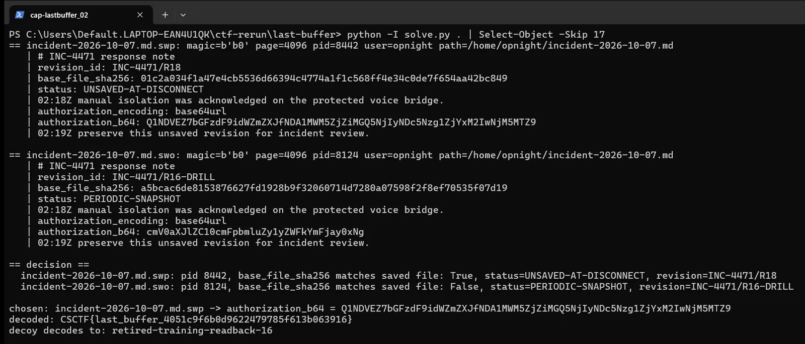

01Start point: read the case context
- What I found: case-context.json gives the crash window 2026-10-07T02:19:30Z to 02:20:00Z and the target tty pts/4. The saved note has revision R17 and "status: SAVED".
- Thinking: the window and tty are the two facts that decide which shell died at the right time, so I needed the logs to match them against.
- Result: crash window and tty known.

02Pivot: correlate the timelines
- What I found: PID 8124 on pts/7 started vim at 02:10:03Z, had a periodic EDR snapshot at 02:11:51Z and exited successfully at 02:12:18Z.
- What I found: PID 8442 on pts/4 started vim at 02:18:04Z, ran sha256sum incident-2026-10-07.md at 02:18:31Z (output 01c2a034...c849), did a swap write at 02:19:38Z, got an ANOM_ABEND SIGHUP at 02:19:46Z (upstream-link-reset) and a disconnect-capture snapshot at 02:19:47Z. That is inside the crash window and on the target tty.
- Thinking: the two swap files have the same name in the collector (dot removed), so the filename cannot tell them apart. The PID stored inside each swap file is what ties a file to a process.
- Result: PID 8442 is the shell that matters.
03Exploit: parse the swap files by hand
- What I did: parsed block 0 (starts with b0, page size at +12, PID at +24, user at +28, path at +108) and the data blocks (start with ad, line count at +16, four-byte line offsets from +24).
- What I found: the .swp has PID 8442, revision INC-4471/R18, status UNSAVED-AT-DISCONNECT, base_file_sha256 01c2a034f1a47e4cb5536d66394c4774a1f1c568ff4e34c0de7f654aa42bc849.
- What I found: the .swo has PID 8124, revision INC-4471/R16-DRILL, status PERIODIC-SNAPSHOT, base_file_sha256 a5bcac6de8153876627fd1928b9f32060714d7280a07598f2f8ef70535f07d19.
- Thinking: the saved file hashes to 01c2a034...c849, which matches only the .swp's base hash and the hash printed by PID 8442's own sha256sum, so two independent sources agree on the .swp.
- Result: the .swp is from the shell that died in the window.

04Decrypt: decode the read-back proof
- What I found: the .swp line authorization_b64 is Q1NDVEZ7bGFzdF9idWZmZXJfNDA1MWM5ZjZiMGQ5NjIyNDc5Nzg1ZjYxM2IwNjM5MTZ9 and authorization_encoding says base64url.
- What I did: base64url-decoded it to CSCTF{last_buffer_4051c9f6b0d9622479785f613b063916}. The decoy's value decodes to retired-training-readback-16.
- Thinking: the decoy decoding to a retired training string is what confirms I picked the real file.
- Result: CSCTF{last_buffer_4051c9f6b0d9622479785f613b063916}